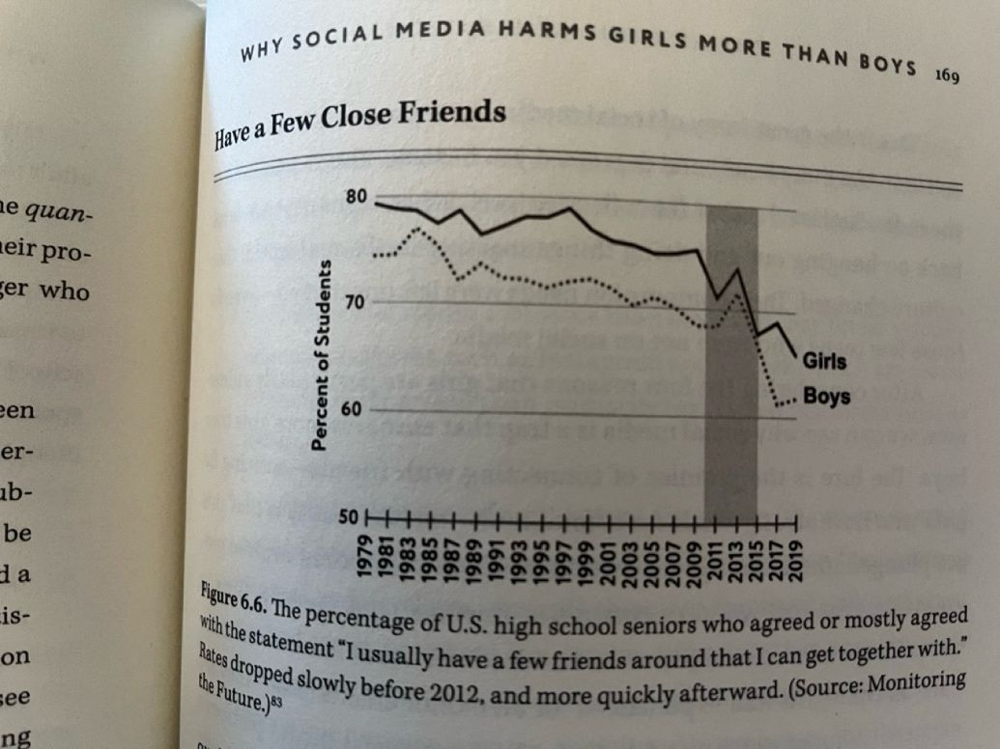
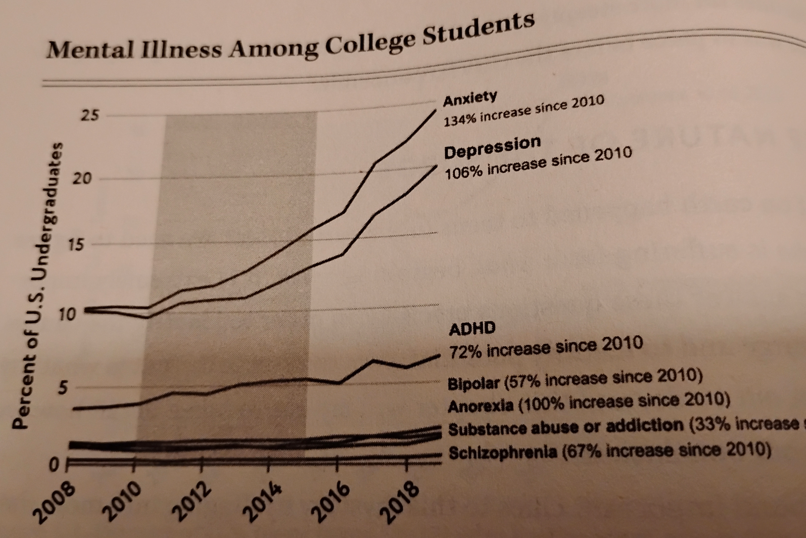
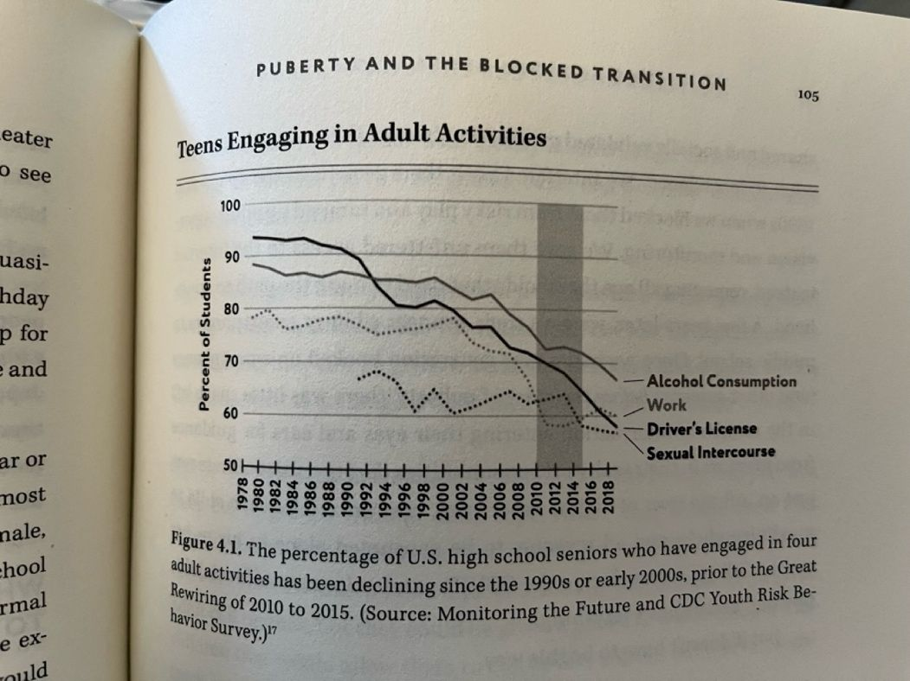

This is part two of a two part essay on the lack of community and the ensuing mental health crisis caused by social media and ubiquitious devices (mobile mostly). Part one is here.
The graph above is from Johnathan Haidt’s “The Anxious Generation”. The book claims that there was a “great rewiring” which occurred between 2010 and 2014 when the first generation of teenagers grew up with personal mobile devices and that this impact is clearly seen in mental health outcomes.
He attributes the lack of relationship building (amonst other things) as the main culprit for statistics such as:
- Depressive episodes amongst teenage girls is up 145%, boys, 161% (absolute number of girls is 5x boys though)
- Emergency room visits for girls self-harming is up 188%
- Anxiety diagnosis amongst college students is up 134%. From 10% of students being diagnosed, to 25% of US college students now having an anxiety diagnosis.

My initial (cynical) reaction was that these are correlative with greater mental health awareness and diagnosis, however that wouldn’t explain the self-harm and suicide rates increasing.
Haidt concedes that a certain percentage of the uptick is increased awareness and diagnosis, but there are several factors to suggest the tech “re-wiring” of culture is directly responsible, for instance:
- There is strong correlation between increased social media use and mental illness
- There is dose response (more usage correlated in a roughly linear fashion to more illness)
- Several cases of withdrawal symptoms and suicidal ideation when technology is removed
All social science is subject to confounding factors and subjectivity, but it feels right directionally as someone who grew up in the 80s and 90s without mobile phones or social media. One of the most telling statistics is that when you ask US teenagers if they wish social media had never been invented, the majority, say yes.
I’ve spoken to many people in the past year since I completed the book and three things have stood out:
- No one is surprised that this change is detrimental
- Everyone is underestimating the impact
- Most people are misunderstanding the cause
Isn't this like Nintendo in the 80s, TV in the 50s and radio in the 30s?
It's a bit different. Here's why: generally everyone understands that social comparison causes anxiety, that social media and mobile phones are addictive and that people are increasingly living in a virtual world.
For girls this is mostly social media: filters, unrealistic beauty standards, mean girls and frenemies. For boys it is primarily online gaming and port addiction, withdrawal and a male anger born out loneliness and failure to launch. For everyone it is less exercise, less deep thinking and lower attention spans. Nothing I’ve said here is controversial or unknown.
But this begs an important question: Previous generations (such as Millennials and Gen-X) are addicted to the same things. We are forever on our phones and PlayStations and what not, but the mental health impact seems to be much more benign.
What changed?
By some measures, Gen Z and Gen Alpha are better off than any generation before. They drink less, do less drugs, have less sex and fewer of them have to work. Teen pregnancies are way lower, as are STDs, and even broken bones. So then why are they so deeply, utterly unhappy?

Haidt gives us a lovely metaphor to explain this phenomenon: Anti-fragile systems.
In greenhouses, you can’t grow tall trees. Why? Because the roots of a tree grow strong enough to support it only when wind pushes the trunk around. Similarly, our social interactions with friends, crushes, teachers, bullies, store clerks, bosses, teammates and family members are our anti-fragile systems. Each time a kid plays in an unstructured, unsupervised (or lightly supervised) way, they are building decision making frameworks, they are learning resiliency, they are partaking in healthy comparisons which inform their evaluation of the real world and their place in it. It’s not always safe; there are playground scuffles, there are car accidents, there are broken hearts, consequences to risk taking – but this is where our emotional root structure develops. Roots which enable us to see ourselves in the two crucial dimensions of human self-esteem: connected and capable.
The Difference between Boys and Girls:
People develop self-esteem differently. Haidt uses the terms Social Validation and Agency
- Social validation: Knowledge that you are known, included in and admired by a group
- Agency: Knowledge that you are skilled and capable.
While boys and girls value both of these attributes, Haidt claims that across cultures, there is preference towards social validation for girls and agency for boys as their primary means of developing self-esteem and comfort.
This is why boys gravitate towards online activities which make them feel capable such as video games, porn and gambling, where women focus on social media and messaging to make them feel connected and validated.
The problem is that if you asked someone what they were most proud of in life, they would probably not say how many likes a post got or what level they got to in a video game. These relationships are highly transactional, and the achievements transient. And so, the young person doesn’t have a strong basis of self-esteem or safety from which to explore the world leading towards greater mental illness.
What do do about it:
I am convinced that we are at a time similar to the 80s and 90s in America with smoking where we had realized the scale of the harm, but we are still relying on the perpetrators to self-regulate as opposed to taking more drastic measures.
What kind of measures? There are two things we need to acknowledge:
- This is not purely a regulation problem – Like any addiction, it’s a cultural problem and it’s a medical problem.
- It is not a personal choice, it’s a collective action problem. As a parent, I can restrict my daughter’s use of screens and social media, but doing so: Excludes her socially and culturally and will be pointless because social acceptance is a higher priority than doing what dad says is good for you.
To be successful in fighting back, we need to a multi-pronged approach:
- Regulation. Social media companies should be help responsible financially for letting under-age users engage with their systems - especially if they are engaging in ways that endanger themselves or others. Addictive loops should be discouraged and some limits legally enforced. Meta and Google can absolutely tell the age of a user even if they lie about it based on interests, and they know exactly how they are manipulating them and for what gain.
- School support. Schools should be default phone free and there should be active attempts to socialize and mix kids. This is the primary place where those roots are built in our society and if kids are on their lunch break looking at instagram, it's not going to happen.
- Alternatives. We need spaces. Common spaces made for play. We need activities teens and pre-teens want to do which are physical and unstructured or lightly structured.
Anyway, that's all I got for now and what I take from the book. I highly recommend you read it.